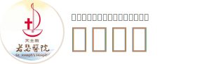

(05) 700-2656
st-obs@mail.stjoho.org.tw
營業時間：週一 ~ 週日 09:00-18:00

最新消息
準父母教室
活動訊息
產後護理之家
新手爸媽必看
影片專區
營 養
營養諮詢查詢
月子餐
生命期營養
營養品介紹
產檢專區
產檢好處
公費產前檢
自費產檢
更多資訊
母嬰用品櫥窗
母嬰親善
孕期大小事
生產計畫
產後照護
新生兒
早產兒
嬰幼兒~兒童
網路掛號
看診進度
約診日期查詢
預約掛號
醫師介紹
預約參觀